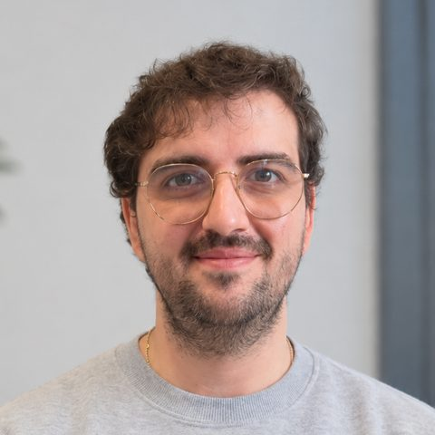

Backend para IA en producción
APIs asíncronas con FastAPI, eventos en tiempo real por WebSocket (el mismo patrón que el streaming de respuestas de un LLM), validación con Pydantic, PostgreSQL y despliegue con Docker.
● Demostrado en proyectos
Construyo aplicaciones con IA sobre una base sólida de backend: APIs asíncronas con Python y FastAPI, tiempo real, PostgreSQL, tests y despliegue. Me estoy especializando en LLMs, RAG, agentes y evaluación en el bootcamp de AI Engineering de Neoland. Antes, siete años en el sector sanitario me enseñaron que la precisión no es opcional.
¿Mejor con la 1 o con la 2? — la pregunta de cabina, aplicada a mi propia carrera.

Las cuatro competencias que más piden las ofertas de AI Engineering. Indico con claridad qué tengo ya demostrado en proyectos y qué estoy aprendiendo ahora en el bootcamp.
APIs asíncronas con FastAPI, eventos en tiempo real por WebSocket (el mismo patrón que el streaming de respuestas de un LLM), validación con Pydantic, PostgreSQL y despliegue con Docker.
Más de 20 suites de tests con pytest y CI en GitHub Actions. Ahora, evaluación de LLMs, guardrails, alucinaciones y defensa frente a prompt injection.
APIs de OpenAI, Anthropic y Google; prompting profesional (CoT, ReAct, few-shot), salidas estructuradas y control de tokens, coste, latencia y rate limits.
Embeddings y bases vectoriales, búsqueda híbrida y reranking; agentes con memoria y tool calling en LangGraph, sistemas multi-agente y MCP.
Software construido de principio a fin, con la misma base técnica que exige un producto de IA: backend asíncrono, estado en tiempo real, tests y despliegue. Los proyectos de IA del bootcamp se irán sumando aquí.
Un juego de rol de mesa llevado al móvil. Un máster crea la sala, los jugadores se unen desde su teléfono, eligen personaje y avanzan juntos por historias ramificadas, con decisiones, combates y pistas sincronizados al instante para todo el grupo.
Durante mis prácticas en Vaelsys diseñé y desarrollé desde cero una aplicación de gestión para sus sistemas IoT, cubriendo el ciclo completo de un producto real dentro de un equipo profesional.
Se publicarán en GitHub a medida que avance el bootcamp de AI Engineering, con su código, sus métricas de evaluación y una demo desplegada.
Un cambio de instrumento, no de mentalidad: de evaluar una vista a evaluar un modelo.
Diseño y desarrollo desde cero de una aplicación de gestión para sistemas IoT, cubriendo todo el ciclo: arquitectura, implementación y pruebas.
Graduaciones ópticas de precisión para la adaptación de lentes correctoras y exámenes audiológicos para la detección de pérdidas auditivas.
Exámenes oculares y evaluaciones de salud visual, prescripción y adaptación de lentes y lentillas a cada caso.
Pruebas visuales y audiológicas, gestión de inventario y participación en campañas de marketing físicas y online, con foco en la satisfacción del cliente.
Una graduación se valida con pruebas, no con intuición. Con un LLM igual: casos de prueba, métricas y casos límite antes de dar algo por bueno.
Siete años en óptica, optometría y audiología: conozco el contexto, el vocabulario y la responsabilidad que exige la IA aplicada a la salud.
Años explicando diagnósticos a pacientes. Hoy, explicando qué puede y qué no puede hacer un modelo a quien va a usarlo.
Destacadas las que uso a diario en mis proyectos. Con borde discontinuo, lo que estoy aprendiendo ahora en el bootcamp de AI Engineering.
Durante siete años trabajé en el sector sanitario, en óptica, optometría y audiología. Graduar una vista o detectar una pérdida auditiva exige método, calma y comprobar cada resultado antes de darlo por bueno.
En 2024 di el salto al desarrollo de software: un ciclo de DAM, prácticas en una empresa tecnológica y proyectos propios con backend asíncrono en Python, tiempo real, tests y CI. Desde octubre de 2026 me especializo en AI Engineering en Neoland: LLMs, RAG, agentes, evaluación y despliegue.
Busco un equipo que construya productos con IA de verdad, donde pueda aportar una base sólida de backend, una obsesión sana por medir la calidad y, si es en salud, conocimiento real del sector.
Busco mi primer puesto como AI Engineer junior, o en backend Python con IA, en Valladolid (presencial o híbrido) o en remoto, con incorporación inmediata. Si mi perfil encaja con tu equipo, escríbeme.